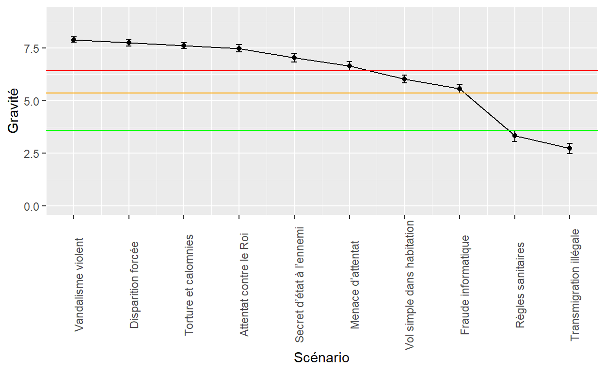
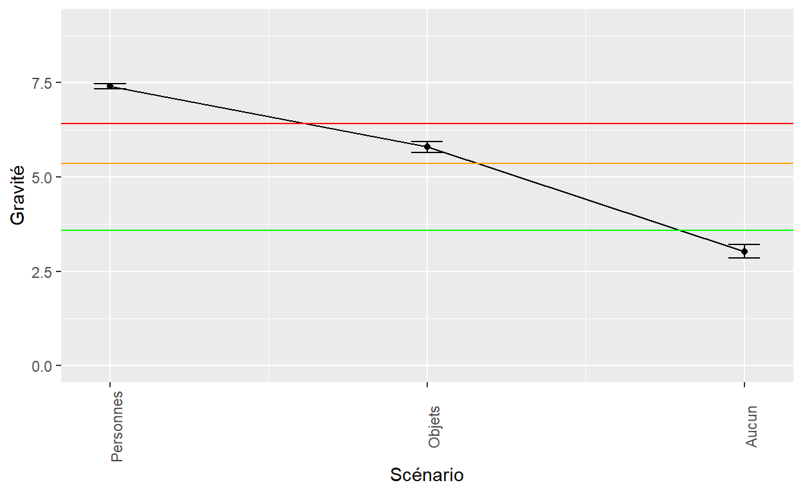
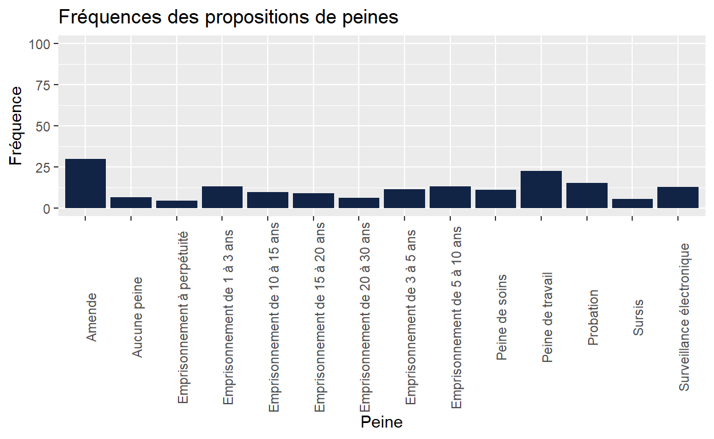
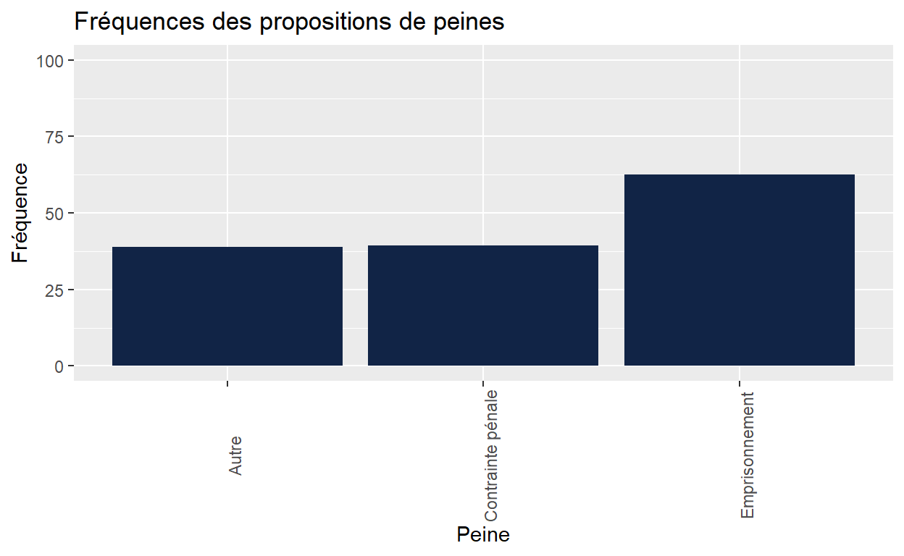
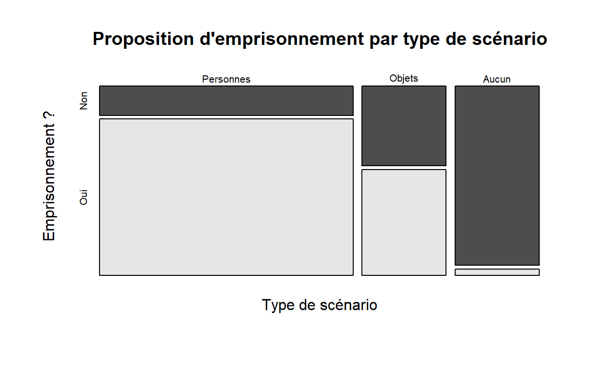
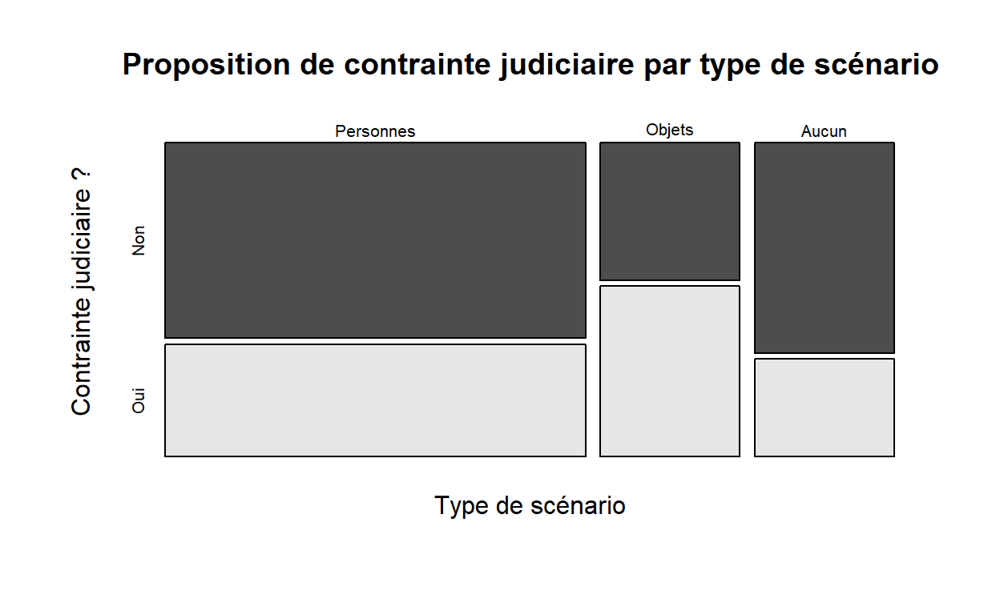
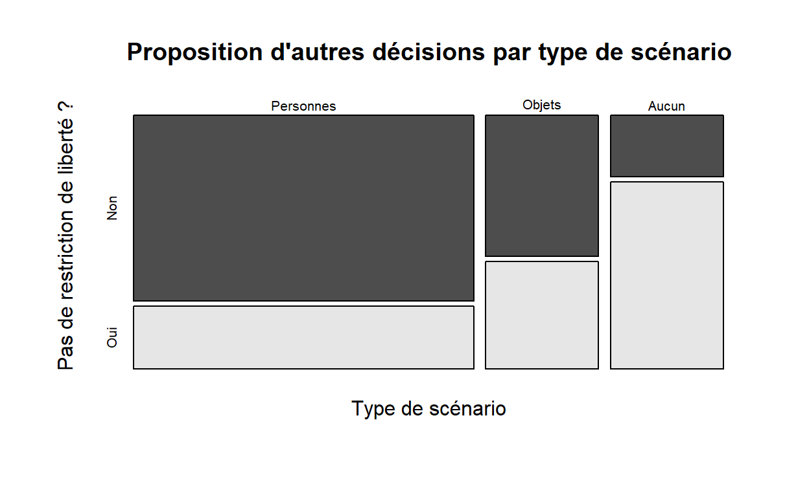

Malgré les évolutions sociales et pénologiques, le code pénal belge est resté relativement inchangé depuis 1867. Des parlementaires ont proposé une réforme dans laquelle les peines sont classées sur une échelle à huit niveaux, selon la gravité de l’infraction. Cette recherche vise à percevoir la manière dont des individus tout venant classent intuitivement la gravité des infractions et leur attribuent des peines. Les résultats démontrent que les participants tendent à classer les faits en trois catégories : atteinte aux biens, atteinte aux personnes et absence d’atteinte aux biens ou aux personnes. Les résultats ne rejoignent pas exactement la typologie de peines proposée par les parlementaires et invitent à penser que l’atteinte aux personnes constitue un pivot symbolique justifiant une peine plus sévère.
Notamment héritière des droits naturels, la Constitution belge (Sénat 2019) défend la jouissance des droits et libertés reconnus aux Belges sans discrimination (article 11). Elle garantit notamment la liberté individuelle (article 12). La loi prévoit toutefois des exceptions lorsqu’un juge ordonne une privation de liberté dans les cadres prévus par le législateur. Toute sanction pénale est dès lors susceptible de contrevenir aux libertés fondamentales des citoyens, c’est-à-dire à ce qu’ils ont supposément de plus précieux. C’est la raison pour laquelle, toute sanction pénale doit reposer sur le principe de proportionnalité, principe selon lequel les atteintes aux droits et libertés individuels doivent toujours être motivées par la poursuite d’un objectif légitime qui, par définition, ne peut être que conforme à l’intérêt général (Renauld 2010, 82). La loi pénale doit être en harmonie avec la société car le droit pénal est l’expression de la morale généralement acceptée. Faute de quoi, la répression de la violation par la loi pénale ne peut coexister avec l’ordre social (Renauld 2010).
Cet équilibre à maintenir entre la défense des droits humains et l’intérêt collectif est au cœur des justices démocratiques occidentales. L’article 49.3 de la Charte des droits fondamentaux de l’Union européenne y fait clairement référence :
L’intensité des peines ne doit pas être disproportionnée par rapport à l’infraction. (Art. 49.3) (JOUE 2012)
En Belgique, c’est le pouvoir législatif qui est de facto responsable de cet équilibre car il se situe à la source de la production des lois. Pradel (2019) évoque un monopole du législateur sur cette question. Renauld (2010) précise toutefois qu’en Belgique, le législateur agit sous contrôle de la Cour constitutionnelle.
Les politiques en vigueur doivent être abordées lors de l’étude d’une problématique pénale (Quirion, Jendly, and Vacheret 2012). L’idée d’une juste peine est une conception mouvante qui peut varier selon les politiques pénales mises en place (Harcourt 2011).
Dès lors, comment trouver la juste sanction à un acte interdit par le code pénal ? Comment le législateur évalue-t-il cette justesse ? L’avis du législateur est-il congruent avec l’avis de la population ?
Ces questions sont d’une actualité aiguë compte tenu d’un débat qui secoue la justice actuelle autour du sens de la peine. Qu’est-ce qu’une peine au 21ème siècle ? Est-elle représentative de l’avis de la population générale pour laquelle elle est censée s’exprimer ? Alors qu’il s’agit de réécrire le code pénal belge, cette adéquation entre l’avis du législateur et l’avis de la population ne doit-elle pas être étudiée ?
Dans le présent article, nous souhaitons brièvement reprendre la philosophie qui servit de substrat à l’écriture des premiers codes pénaux modernes (c’est-à-dire des 18ème et 19ème siècles), présenter une proposition parlementaire actuelle de réforme des catégories pénales puis soumettre des scénarios représentatifs de ces catégories à un échantillon tout venant de la population. Les participants estiment-ils les faits présentés aussi gravement que le législateur ? Proposent-ils des sanctions similaires à ce dernier ?
Notre étude - inédite à notre connaissance - vise à alimenter le débat sur le sens de la peine et sa fonction sociale.
Lorsqu’il critiqua la justice d’Ancien Régime, Beccaria (1764) s’inspira de la philosophie du contrat social qui mettait en opposition les intérêts particuliers et l’intérêt collectif. Il dénonça le caractère arbitraire et cruel des lois précédentes et proposa une logique d’équivalence entre la gravité des délits et la sévérité de la punition. Il présente le principe de proportionnalité en ces termes :
L’intérêt de la société est non seulement qu’il ne se commette point de crimes, mais encore qu’ils soient plus rares à proportion qu’ils en violent plus les lois. Le tort qu’ils font au bien public et les motifs qui portent à les commettre doivent donc être la mesure du frein qu’on cherche à leur opposer ; il doit donc exister une proportion entre les délits et les peines. (Beccaria 1764, 30)
Comment Beccaria évalue-t-il cette proportion ? Existe-t-il des critères précis ? Son texte reste relativement évasif sur ces questions en reprenant la logique récurrente de son argumentation : la recrudescence des intérêts particuliers de chaque membre de la collectivité menace l’unité de celle-ci. Ainsi écrit-il ceci :
Posez la nécessité de la réunion des hommes et les conventions qui résultent nécessairement de l’opposition même des intérêts particuliers, il se trouvera une progression décroissante de désordres, dont le premier terme sera les crimes qui tendent à la destruction même de la société, et le dernier la plus légère injustice possible faite à un de ses membres. Les termes moyens seront toutes les actions opposées au bien public, qu’on nomme délits, depuis la plus criminelle jusqu’à la moins coupable. (Beccaria 1764, 30)
Beccaria définit ainsi un principe directeur sans offrir davantage de critères précis. Il fallut attendre la Révolution française de 1789 et les travaux du comité de législation criminelle (dirigé dès 1791 par Lepeletier de Saint-Fargeau) pour que le premier code pénal (du 25 septembre 1791) énumère les actes répréhensibles et les sanctions qui doivent en découler. Par exemple, le code punit de mort toutes connivences avec les ennemis de la République française (titre I, section 1, art. 1), de six années de fers le viol (titre II, section 1, art 29) ou d’une peine de quatre années de détention pour avoir caché le cadavre d’une personne homicidée (titre III, art. 4). Quels étaient les intérêts principaux protégés par ce premier code pénal ? Pour Lascoumes, Poncela, and Lenoël (1989), 43% de la totalité des articles visaient à défendre les intérêts politiques de la nouvelle République française. Le code défendait d’abord la Nation puis la famille et les intérêts commerciaux. Le code de 1791 et sa réforme de 1810 (communément appelé le code Napoléon) confortèrent l’importance du père de famille comme représentant d’un ordre social stable. Pour Dupont-Bouchat (1999), la répression des crimes contre les personnes demeura peu innovante, se bornant à protéger la famille et à maintenir la puissance paternelle. Ces codes nous permettent ainsi de deviner - entre leurs lignes - les intentions du pouvoir législatif de manière plus claire que le projet d’intention initial de Beccaria (1764). Ils réservent les punitions les plus sévères aux actes qui trahissent les idéaux de la République ou de l’Empire français.
deBrouwer (2012) souligne une tension idéologique dans le code de 1791 autour de la notion de corrigibilité du délinquant : la peine est-elle susceptible de le réintégrer dans le corps social ou est-il irrémédiablement dangereux pour ce dernier ? Les peines proportionnelles au délit ont ainsi une vertu moralisante. La loi pénale a pour objectif de réprimer l’atteinte mais également de protéger l’ordre public. Elle comporte donc une dimension sociale et morale (Tulkens et al. 2014). La peine de mort - maintenue dans le code de 1791 - est moins efficace pour le délinquant mais est porteuse d’une fonction exemplative puissante pour le reste de la population. Cette fonction exemplative est dès lors susceptible d’influencer le législateur. Se référant à Chauveau and Helie (1837), deBrouwer (2012) évoque la notion de degré de civilisation plus ou moins explicite dans la production des lois du 19ème siècle :
L’exposition du degré de civilisation peut être considérée comme primordiale, et influer sur l’élaboration de l’échelle des peines et du système pénal en général, parce qu’il est préférable de se ranger parmi les “nations éclairées” plutôt que parmi les nations “qui sont encore dans les ténèbres de l’ignorance”.
Depuis lors, les réécritures des codes pénaux français et belges se sont bien entendu nourris des débats parlementaires et sociétaux mais sont restés fidèles aux principes des codes post-révolutionnaires. Les parlementaires demeurent détenteurs du pouvoir législatif. Pour l’école classique du droit, le crime est un préjudice social légalement défini. C’est le droit positif qui détermine, objectivement, la gravité de l’infraction, c’est-à-dire le degré d’atteinte à la société. L’accent est ainsi mis sur l’élément légal et l’élément matériel de l’infraction (Debuyst 1976).
Le Code pénal belge actuellement utilisé a été instauré en 1867 (Stevens 1997). Plus d’un siècle après sa naissance, aucune révision complète du code n’a été effectuée (Tulkens 1983). Plusieurs projets de modernisation des textes ont été entrepris mais sans réel succès. Cette lacune au niveau des réformes a pour répercussion un code qualifié de désuet dont les dispositions ne sont plus en accord avec les mœurs de la société actuelle (Özen, Aouasti, and Zachetta 2020). Selon certains parlementaires, une réforme globale est également imposée par l’accumulation de modifications légales ponctuelles et jurisprudentielles qui rendent le Code pénal belge indéchiffrable.
De ce fait, une commission ministérielle de réforme du droit pénal a été instituée, aboutissant à la rédaction d’un avant-projet de Livre Ier du Code pénal (Rozie et al. 2016). En 2019, la commission rédigea un avant-projet de nouveau code comportant le Livre Ier et le Livre 2 du Code pénal (Rozie, Vandermeersch, and DeHert 2019). Par la suite, deux propositions de lois ont été déposées à la Chambre des Représentants en vue de réformer le Code pénal belge. La première, déposée par Goffin et al. (2019) (Proposition de loi instaurant un nouveau Code pénal, 2019) a donné lieu à une autre proposition de réforme en 2020. Cette seconde proposition tient à faire valoir les recommandations reprises dans l’avant-projet. Pour cette raison, nous analyserons cette dernière, qui est la plus récente, déposée par Özen, Aouasti, and Zachetta (2020) (Proposition de loi instaurant un nouveau Code pénal, 2020).
La proposition de réforme soutenue par Özen, Aouasti, and Zachetta (2020) vise à rendre le Code pénal belge précis, cohérent et simple. Ces principes étaient déjà présents lors de la première proposition déposée par Goffin et al. (2019).
La précision requiert que les définitions et incriminations soient claires afin de garantir la sécurité juridique et lutter contre l’arbitraire. Dans cette même optique, il y a une volonté de moderniser le langage afin que les intitulés soient plus compréhensibles. Le deuxième principe de réforme est la cohérence. Etant donné que nul n’est censé ignorer la loi, il est impératif que le législateur veille à ce que les règles de droit ne se contredisent pas. Le dernier principe évoqué est la simplicité. Elle découle tout naturellement des principes précédents en soutenant un fonctionnement optimal à l’aide de règles transparentes et simples. Ainsi, toutes les règles compliquant la pratique du droit doivent être révisées ou éliminées.
Les principes exposés ci-dessus sous-tendent les réformes exposées dans le projet de loi. Les éléments de réforme sont également inspirés des recommandations de la Commission Holsters de 2005, dont la philosophie veut que la peine punisse tout en limitant ses effets secondaires préjudiciables au maximum.
Dans cet esprit, la principale réforme proposée est celle de limiter au plus possible la peine d’emprisonnement. Elle ne doit être utilisée qu’en dernier recours et pour des faits très précis. Les longues peines sont également à éviter. Nous constatons donc une volonté de créer des catégories de faits pour lesquels la privation de liberté est légalement exclue.
La latitude laissée actuellement au juge pour individualiser la peine a pour conséquence que les peines sont rarement infligées stricto sensu telles qu’indiquées dans le Code pénal. De ce fait, en adéquation avec les principes de cohérence et de clarté, les peines doivent être revues afin de correspondre aux peines infligées. La correctionnalisation de certains crimes et le peu d’exécution de la plupart des peines de police invitent à réformer ces catégories pénales vers une nouvelle classification qui aurait plus de sens et qui serait plus compatible avec les pratiques de terrain.
Ainsi, l’avant-projet propose une nouvelle hiérarchisation des peines, en intégrant un large panel afin que le juge puisse avoir à sa disposition un ensemble de peines diversifié. Celles-ci seraient désormais classées selon huit niveaux, laissant de côté la classification tripartite (contravention, délit et crime) héritière du code Napoléon en supprimant la catégorie des contraventions. Les infractions sont désormais ordonnées sur base du degré de culpabilité présent dans le chef de l’auteur (Özen, Aouasti, and Zachetta 2020). L’infraction commise en connaissance de cause doit être jugée comme étant plus grave qu’un fait commis par défaut de prévoyance. Cette pensée rejoint les constats précédemment exposés dans la littérature (Alicke 2000). Dès lors, nous pouvons présenter la nouvelle classification des peines de la manière suivante dans la tableau 1 :
| Niveau | Peine |
|---|---|
| 8 | Emprisonnement à perpétuité |
| 7 | Emprisonnement de vingt à trente ans. |
| 6 | Emprisonnement de plus de quinze ans à vingt ans. |
| 5 | Emprisonnement de dix ans à quinze ans. |
| 4 | Emprisonnement de plus de cinq ans à dix ans. |
| 3 | Emprisonnement de plus de trois ans à cinq ans. |
| 2 | Emprisonnement d’un an à trois ans. Le niveau 2 comporte également un panel d’autres sentences : le traitement imposé, la peine de surveillance électronique, la peine de travail, la peine de probation. |
| 1 | Exclut toute possibilité de recours à la peine d’emprisonnement. De ce fait, ce niveau propose le champ de peines suivantes : amendes maximales de 20.000 euros, peine de travail d’une durée maximale de cent-vingt heures, peine de probation d’une durée maximale de douze mois, confiscation. |
Il est à noter qu’une multitude de peines peuvent s’ajouter à la condamnation si le juge l’estime nécessaire. Nous noterons à titre d’exemple la déchéance de droits, la fermeture d’établissement, l’interdiction de résidence ou de contact ou l’interdiction professionnelle. Les peines peuvent également être revues à la baisse en cas de circonstances atténuantes. Dans ces cas, pour les infractions de niveau 1, le juge peut prononcer la peine accessoire au lieu de la peine principale.
Cette typologie en huit catégories se veut novatrice mais une question s’impose : sur quelle base rationnelle repose-t-elle ? Pourquoi huit catégories ? Pourquoi pas sept ou neuf ? La proposition de loi n’apporte guère d’éclairage sur cette question. Notons toutefois que Özen, Aouasti, and Zachetta (2020, 220) font référence à un instrument d’évaluation afin de déterminer le caractère punissable d’un comportement scientifiquement élaboré par De Craim et al. (2017). Cet instrument et le rapport des chercheurs nous étaient malheureusement interdits de consultation. Cette typologique à huit catégories suggérée par le législateur correspond-elle aux intentions de la population ? Afin de répondre à cette question, nous souhaitons soumettre des exemples d’infractions à des personnes issues de la population afin qu’ils en évaluent la gravité et qu’ils proposent des sanctions pénales éventuelles.
La population que nous souhaitons étudier est la population belge francophone adulte. Etant donné que nous n’avons pas les moyens de sonder l’entièreté des citoyens de Belgique, nous avons eu recours à un échantillon de convenance.
A la fin de notre récolte, notre échantillon comportait 275 participants (dont 157 femmes et 118 hommes). L’âge moyen était de 35,28 ans (ET = 15,49). 82,2% d’entre eux n’avaient pas de contacts professionnels avec le domaine judiciaire. Le niveau moyen d’éducation correspondait à un niveau de bachelier universitaire. Le niveau le plus bas obtenu était issu de l’enseignement secondaire inférieur. Nous possédions ainsi un échantillon plus jeune et plus éduqué que la moyenne belge (Statbel 2020, 2021).
La première partie du questionnaire expose brièvement la recherche et requiert que le sujet marque son accord sur les conditions de passation. Ensuite, il doit fournir des données démographiques, utiles aux analyses ultérieures telles que son sexe, son âge, son niveau d’études et la présence de contacts professionnels avec le milieu judiciaire.
La seconde partie du questionnaire comporte dix scénarios. Chaque scénario expose un fait infractionnel issu d’un niveau de peine différent, relatif aux propositions de Özen, Aouasti, and Zachetta (2020). Nous avons sélectionné les scénarios sur base des statistiques policières belges. De cette manière, les sujets étaient confrontés aux faits les plus fréquents de chaque catégorie.
Pour chaque scénario, le participant devait juger le niveau de gravité des faits sur une échelle de Likert allant de 0 (pas grave du tout) à 9 (extrêmement grave) et attribuer une ou plusieurs peine(s).
Afin de construire les scénarios, nous nous sommes basés sur les dix infractions les plus constatées par la police (Police 2021). Nous avons choisi de créer des scénarios simples mais qui correspondent aux catégories de la proposition de loi. Certains scénarios peuvent dès lors renvoyer à des situations atypiques. Afin d’éviter le biais de cohérence interne, nous avons ordonné les scénarios de manière aléatoire et pas dans l’ordre de gravité. Les scénarios ont donc été construits de la manière suivante et repris dans le tableau 2.
| Numéro | Scénario | Code | Justification |
|---|---|---|---|
| 1 | Une personne s’introduit dans une habitation durant la nuit afin de voler des objets de valeur. Aucun coup ni blessure ne sont à déclarer. | 3 | Vol et extorsions, particulièrement les vols simples dans habitation sans coups ni blessures. Selon la réforme, ce fait est puni d’une peine de catégorie 2. Si l’infraction est commise durant la nuit, elle correspond à une peine de catégorie 3 |
| 2 | Une personne dégrade volontairement un véhicule et se fait surprendre par son propriétaire. Le ton monte et le vandale porte involontairement un coup mortel au propriétaire du véhicule. | 5 | Dégradation de la propriété, particulièrement le vandalisme sur véhicule. Selon la réforme, le vandalisme est puni d’une peine de niveau 1. Lorsque le vandalisme est accompagné de violence entraînant la mort sans intention de la donner, le fait est puni d’une peine de niveau 5 |
| 3 | Une personne tente d’assassiner le Roi en lui portant des coups. La garde rapprochée du Roi intervient et ce dernier se retrouve fortement blessé, mais n’est pas mort. | 8 | Infraction contre l’intégrité physique, particulièrement coups et blessures hors sphère familiale. Nous avions la nécessité de présenter un fait de catégorie 8. Nous avons donc modifié l’infraction afin que ces coups soient portés envers le Roi, ce qui requalifie l’infraction de la manière suivante : attentat contre la vie du Roi ou de l’héritier présomptif de la couronne |
| 4 | Un agent de l’Etat arrête une personne détenant des stupéfiants. Il la prive de liberté et la place dans un endroit secret, sans jamais avertir personne. L’agent ne reconnaît pas avoir arrêté la personne et dissimule l’endroit où elle se trouve. | 6 | Infraction liée aux drogues, particulièrement la détention de stupéfiants. Nous avions la nécessité de présenter un fait de catégorie 6, c’est pourquoi nous avons consulté la réforme afin d’augmenter le niveau de gravité du fait. La disparition forcée est punie d’une peine de niveau 6. Elle consiste en « l’arrestation, la détention, l’enlèvement ou toute autre forme de privation de liberté par des agents de l’État ou par des personnes ou des groupes de personnes qui agissent avec l’autorisation, l’appui ou l’acquiescement de l’État, suivi du déni de la reconnaissance de la privation de liberté ou de la dissimulation du sort réservé à la personne disparue ou du lieu où elle se trouve, la soustrayant à la protection de la loi » |
| 5 | Une personne utilise une fausse identité sur internet en vue de récupérer des informations secrètes et les transmettre à un ennemi de l’Etat. | 7 | Fraude, particulièrement la fraude et l’escroquerie sur internet. Nous avions la nécessité de construire un scénario de catégorie 7, c’est pourquoi nous avons consulté la réforme et constaté que l’escroquerie en vue de transmettre un secret d’état à l’ennemi était punie d’une peine de niveau 7 |
| 6 | Une personne ne respecte pas les mesures sanitaires. | 1 | Infraction à la santé publique, particulièrement le refus ou la négligence du respect des règles sanitaires. Nous avons consulté la législation en vigueur, qui punit ce fait d’une peine de niveau 1 |
| 7 | Une personne pirate et bloque le système informatique d’une entreprise en vue d’obtenir une rançon. | 2 | Criminalité informatique, particulièrement la fraude informatique. La réforme soutient que cette infraction doit être punie d’une peine de niveau 2 |
| 8 | Une personne inflige volontairement une douleur très aiguë à un individu d’une ethnie différente. De plus, il fait usage de calomnie et de diffamation à son égard. | 4 | Infraction contre les valeurs morales et sentiments, particulièrement l’atteinte à l’honneur, la calomnie et la diffamation. Nous avions la nécessité de construire un fait de niveau supérieur, c’est pourquoi nous y avons ajouté la torture, qui est punie d’une peine de niveau 4 |
| 9 | Une personne entre en Belgique de manière illégale. | 2 | Infraction à la législation sur les étrangers, particulièrement l’accès au territoire par transmigration illégale. |
| 10 | Une personne menace de poser une bombe dans l’aéroport de Charleroi. | 2 | Infraction contre la sécurité publique, particulièrement la menace d’attentat. |
La figure 1 représente la gravité moyenne (avec intervalles de confiance à .95) évaluée par les participants aux dix scénarios proposés.

Figure 1: Gravité moyenne aux dix scénarios
Ces moyennes sont-elles significativement différentes ? Une ANOVA indique que certains scénarios sont estimés plus graves que d’autres (F (9, 2740) = 342,874 ; p < .001). Les analyses post-hoc permettent d’identifier trois groupes de scénarios dont la gravité est estimée similaire : les six premiers scénarios du graphique ont les scores de gravités les plus élevés, les deux suivants ont des scores de gravité plus bas et les deux derniers les plus bas. Compte tenu de ces résultats, nous avons regroupés ces dix scénarios en trois types de gravités similaires. Une question importante qui se pose est dès lors celle-ci : quels points communs semblent partagent ces scénarios ? Selon nous, ce regroupement semble correspondre aux caractéristiques suivantes :
La figure 2 représente les moyennes de gravité pour les trois types de scénarios. Une nouvelle ANOVA confirme que les gravités moyennes de ces trois types de scénarios sont significativement différentes (F (1, 2748) = 2657 ; p < .001).

Figure 2: Gravité moyenne pour les trois types de scénarios
La figure 3 représente la fréquence à laquelle les participants ont proposé chaque peine pour les dix scénarios. C’est l’amende (30 %) qui est proposée de manière la plus fréquente. Cependant, le graphique est trompeur car il existe notamment plusieurs peines d’emprisonnement. Concernant celles-ci, ce sont les peines comprises entre un et dix ans qui sont les plus fréquentes.

Figure 3: Fréquences de peines pour chaque scénario
Afin de rendre les résultats plus éloquents, nous avons décidé de regrouper toutes les peines en trois catégories :
La figure 4 reprend les fréquences de ces trois sanctions pénales. Notons que la somme des sanctions dépasse 100% car les participants pouvaient proposer plusieurs peines pour un même scénario.

Figure 4: Fréquences des trois sanctions pénales
Nos résultats indiquent que les participants proposent une peine d’emprisonnement dans 63 % des cas. Ce résultat peut paraître élevé mais rappelons ici que la plupart de nos scénarios impliquaient des faits d’atteinte aux personnes. Les participants proposent une contrainte judiciaire dans 39 % des cas et une absence de contrainte ou de punition dans 39 % des cas. Ces résultats indiquent que les participants sont ouverts à plusieurs types de sanctions mais qu’ils demeurent attachés à la peine d’emprisonnement malgré de nombreuses critiques à l’égard de ce mode de punition (Sykes (1958);Haney (2012);Sykes, Kaminski, and Mary (2019)). Une question importante ici est de savoir si le type de sanction pénale diffère en fonction du type de faits commis. Pour répondre à cette question, reprenons la typologie de scénarios que nous avons proposée au regard des propositions de punitions émises par les participants.
Un test d’indépendance indique que les deux variables sont liées (X² = 1157.4, df = 2, p < .001). La figure 5 est une mosaïque qui représente ce lien. La largeur des colonnes rappelle qu’il existe plus de scénarios impliquant des atteintes aux personnes que ceux impliquant des objets ou aucun des deux. La couleur blanche indique que les participants sont nombreux à choisir cette option. La couleur sombre indique que les participants sont peu nombreux à avoir choisi cette option. Nous voyons que les participants proposent des peines d’emprisonnement (toutes durées confondues) de manière nettement plus fréquente lorsque les scénarios portent atteintes aux personnes. Cette fréquence baisse lorsque l’atteinte concerne des objets. Elle est très basse lorsque le scénario ne porte atteinte ni aux personnes ni aux objets.

Figure 5: Fréquences des peines d’emprisonnement par type de scénario
Un test d’indépendance indique que les deux variables sont liées (X² = 77.863, df = 2, p < .001). La figure 6 est une mosaïque qui représente ce lien. Bien que certains participants suggèrent une sanction pénale pour des scénarios impliquant une atteinte aux personnes, ils semblent plutôt la proposer pour des scénarios impliquant des objets. En ce qui concerne les scénarios n’impliquant ni des personnes ni des objets, les participants proposent rarement la contrainte pénale.

Figure 6: Fréquences de contrainte judiciaire par type de scénario
Un test d’indépendance indique que les deux variables sont liées (X² = 435.4, df = 2, p < .001). La figure 7 est une mosaïque qui représente ce lien. Deux constats saillants émergent de cette Figure. D’une part peut-on constater que les participants proposent rarement des amendes ou des sursis lorsque les scénarios portent atteinte aux personnes. D’autres part, ils les proposent majoritairement pour des scénarios ne portant atteinte ni aux personnes ni aux objets. Ils sont plus partagés en ce qui concerne les scénarios impliquant les objets.

Figure 7: Fréquences d’autres décisions par type de scénario
Nos résultats semblent indiquer que les participants classent implicitement les infractions à la loi dans trois catégories distinctes. Cette typologie ne correspond pas exactement aux trois catégories d’infractions héritières du code pénal français de 1810 (contraventions, délits et crimes) ni à celle proposée par Özen, Aouasti, and Zachetta (2020) en huit catégories. Ces huit catégories proposées par le législateur nous ont intrigués car elles s’avèrent précises sur les sanctions pénales (par exemple les différentes tranches de peines d’emprisonnement) mais beaucoup moins sur le type d’infractions qui les induisent. Ainsi ne peut-on s’empêcher de penser que c’est la progressivité de la sanction qui a précédé ce qui est censé la causer. Dit autrement, le législateur aurait envisagé le type de punition avant d’envisager ce qui pourrait la provoquer. Selon nous, cette approche renverse la logique de la pensée punitive selon laquelle c’est une infraction qui appelle une sanction (et pas l’inverse). En effet, selon Beccaria (1764), c’est parce qu’un comportement donné induit une atteinte morale à la collectivité qu’il doit être puni. Il s’agit alors d’y trouver une juste sanction. Cette inversion logique ne nous semble pas anodine car elle résulte probablement d’une forte imprégnation à la conception classique de la peine. Il peut sembler surprenant que le législateur – qui dit souhaiter diminuer le recours à la peine d’emprisonnement – envisage une typologie au sein de laquelle sept catégories sur huit induisent ladite peine d’emprisonnement. Cela est d’autant plus interpellant si l’application de ce code va de pair avec l’exécution certaine de la peine. Cette configuration logique ne contraindra-t-elle pas le magistrat à recourir obligatoirement à une peine d’emprisonnement effective peu importe les particularités de l’affaire ? L’intention du législateur semble être de simplifier et clarifier l’application de la logique pénale. Un risque ne serait-il pas de la rigidifier, c’est-à-dire de contraindre le magistrat à appliquer des règles strictes ? Peut-être, s’agirait-il de définir des règles simples, compréhensibles et sensées pour les citoyens tout en laissant aux magistrats une latitude punitive diversifiée et utile au but recherché à savoir réprimer les infractions ?
Selon les résultats que nous avons obtenus, il existerait un gradient de gravité allant des infractions susceptibles de perturber la sécurité publique, puis les infractions causant des dégâts ou des vols d’objets jusqu’aux infractions qui portent atteinte à l’intégrité physique ou psychologique de personnes. Le code pénal belge (à l’instar des autres codes pénaux occidentaux) propose des distinctions en fonction de la gravité de l’atteinte physique et des dommages causés aux victimes (un meurtre est perçu comme étant plus grave qu’un coup causant une blessure). Nos résultats empiriques ne corroborent pas la pertinence de telles distinctions. Au contraire, il semble que la moindre atteinte à une personne constitue un seuil critique suffisant à la sanction et que la gravité objective des atteintes n’augmente pas la perception de gravité de manière significative. Il s’agit d’un résultat surprenant car il contrevient avec le sens commun et la logique sous-tendant le code pénal.
Ces résultats peuvent être discutés avec ceux de l’étude The National Survey of Crime Severity (Wolfgang et al. 1985) : près de 60000 foyers américains ont été interrogés en 1977 sur la perception du niveau de gravité de 250 comportements. Wolfgang et al. (1985) ont constaté que les infractions les plus graves portaient atteinte à l’intégrité physique, alors que les autres atteintes étaient estimées moins graves. Par exemple, l’infraction la moins grave est celle-ci : “une personne de moins de seize ans fait l’école buissonnière” (score de 0.25). La plus grave est celle-ci : “une personne pose une bombe dans un bâtiment public. La bombe explose et tue vingt personnes” (score de 72.10). Ces résultats sont compatibles avec les nôtres. Notons toutefois que certaines infractions mineures à l’intégrité physique pouvaient parfois être considérées comme moins grave qu’un vol. Par exemple, “un adolescent frappe son père avec ses poings. Le père doit être hospitalisé” (score de 7.93) était estimé moins grave que “Une personne se rend dans un musée public et y vole un tableau valant 1000 $” (score de 9.71) (Wolfgang et al. 1985, 47–48). Cette étude très intéressante nuance dès lors nos résultats et notre hypothèse de seuil. Il semble exister certaines zones de recouvrement entre les atteintes aux objets et aux personnes, à tout le moins pour un échantillon américain des années 1970. Cependant, il faut noter que la méthodologie utilisée diffère fortement de la nôtre. En effet, pour Wolfgang et al. (1985), l’évaluation de la gravité se faisait de manière relative : les chercheurs proposaient un scénario de référence puis demandaient aux participants de comparer 25 autres scénarios au premier. En ce qui nous concerne, nous avons choisi une échelle absolue : les participants devaient évaluer la gravité de chaque scénario l’un après l’autre sans qu’il ne leur soit explicitement demandé de les comparer les uns aux autres. Nous n’induisons dès lors pas d’effort de discrimination pour chaque scénario. Wolfgang et al. (1985) quant à eux induisent un effort cognitif supplémentaire aux participants en les forçant à comparer des scénarios plus ou moins similaires. Nous estimons que ces deux approches ne sont pas opposées mais complémentaires : la nôtre serait révélatrice d’une pensée plus intuitive et rapide face aux infractions alors que celle de Wolfgang et al. (1985) force les participants à s’attacher aux détails de chaque scénario pour produire des comparaisons mutuelles. Nous pensons que notre approche serait plutôt révélatrice de la pensée populaire commune (la plus fréquemment à l’œuvre) alors que celle de Wolfgang et al. (1985) serait plutôt révélatrice d’une réflexion plus attentive et posée (plus rarement sollicitée) du même phénomène.
Toujours selon nos résultats, cette typologie en trois catégories va de pair avec des méthodes punitives différentes. En effet, les participants privilégient la peine d’emprisonnement pour les scénarios qui portent atteinte aux personnes. Ils privilégient les mesures alternatives (telles que la probation, la surveillance électronique, la peine de soin, la peine de travail) pour les scénarios qui portent atteinte aux objets. Enfin, ils privilégient l’amende, le sursis ou l’absence de peine pour les scénarios qui ne portent atteinte ni aux personnes ni aux objets. Ces résultats invitent à adopter une grille de lecture plus simple des infractions pénales, à privilégier les alternatives à l’emprisonnement pour la plupart des infractions et à recourir à l’emprisonnement lorsqu’elles portent atteinte à l’intégrité physique ou psychologique des victimes. A titre indicatif, à la date du 1er janvier 2020, le Ministère Public belge traitait 188037 affaires dont 30,1% concernaient des personnes, 29,3% concernaient des objets et 40,6% ne concernaient ni l’un ni l’autre (Parquet 2022). Nos résultats invitent à penser que les participants restent attachés à la fonction punitive de la justice, conformément au principe de certitude de la peine de Beccaria (1764), c’est-à-dire qu’ils attendent une réaction de la justice en cas d’infraction. Ils réclament toutefois une adaptation du type de sanction en fonction de la nature de l’infraction. Le recours aux diverses contraintes judiciaires en lieu et place de la peine d’emprisonnement repose probablement sur le postulat de la corrigibilité des auteurs d’infractions. Selon les participants, la peine d’emprisonnement devrait être réservée aux atteintes aux personnes car ces dernières marquent le dépassement d’un seuil symbolique supposément grave.
Nos résultats semblent indiquer que la population reste séduite par la peine d’emprisonnement. Ils soutiennent que l’atteinte physique ou psychologique à la personne constitue le facteur davantage déterminant pour privilégier la peine d’emprisonnement. Tous ces éléments de discussion invitent à réfléchir à la conception d’une infraction. A l’époque de Beccaria, l’infraction était déterminée par l’atteinte à la valeur morale. Or, nous constatons qu’il y a eu un passage vers une définition de l’infraction contingente à la peine attribuée. Ainsi, de nos jours, l’application du droit pénal semble soutenir que l’infraction est déterminée par la peine, lui conférant ainsi le statut de contravention, délit ou crime. Notre étude remet dès lors en cause ce basculement, où l’infraction est davantage définie par les textes et la peine que par le préjudice causé. Nos résultats encouragent à redéfinir la gravité d’un fait à partir de l’atteinte aux valeurs plutôt que par rapport à la lourdeur de la peine théoriquement prévue.
Plusieurs éléments limitent la portée de notre étude. Premièrement, notre échantillon ne concerne qu’une petite partie de la population, est assez jeune et éduqué. Deuxièmement, les scénarios proposés aux participants sont censés illustrer les huit catégories pénales proposées mais ne peuvent recouvrir l’ensemble des infractions. De nombreuses infractions n’ont pas été soumises au jugement des participants. Troisièmement, elle fait courir le risque de donner une primauté à la justice populaire alors que le législateur est censé apporter un regard raisonné et raisonnable au processus législatif. Il s’agit à ce titre d’un débat important du 21ème siècle : comment articuler les procédures législatives héritières de la Révolution française avec le souhait de plus en plus manifeste de la population d’être impliquée dans les décisions sociales importantes. Notre étude tente de réconcilier les deux approches afin de susciter la réflexion et d’éventuelles innovations pénales.